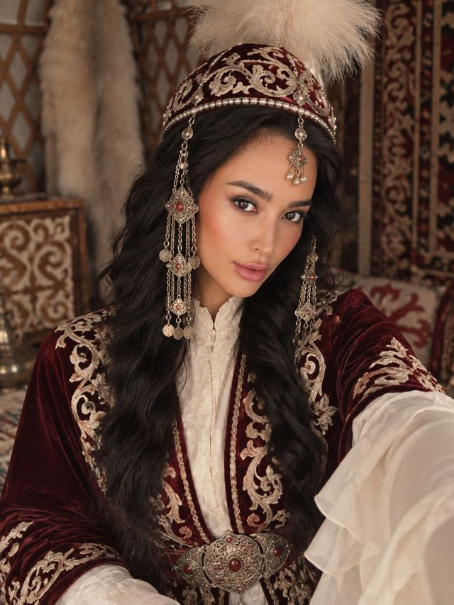

Ақ тілекпен шақырамыз
Сырға салуҚұдалық

Құрметті қонақтар!
Сіздерді аяулы қызымыз
Айжанның
Сырға салу және құдалық рәсіміне арналған ақ дастарханымыздың қадірлі қонағы болуға шақырамыз!
Сырға салу
Ақ дастархан басында
Құрметті қонақтар!
Сіздерді сырға салу және құдалық тойымыздың қадірлі қонағы болуға шақырамыз.
Той иелері
Азамат · Арайлым
Шақыру күні
15
қазан · 2026
Бейсенбі
Басталуы — 17:00
Тойға дейін
00күн
00сағат
00минут
00секунд
Қатысуыңызды
растаңыз
Сіздерді қуана күтеміз!
Айжан
Сырға салу · Құдалық